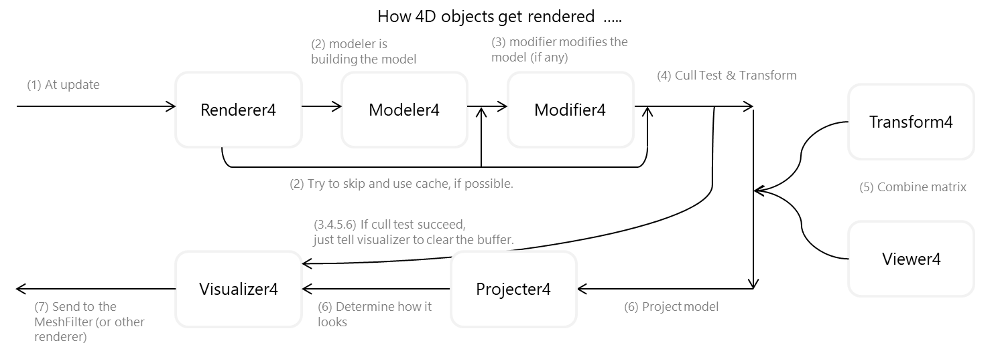

Components in Hierarchy
There are lot of components for rendering inside Engine4. These components below always required in order a rendered and projected 4D object can be generated.
Renderer4
Overloadable: No
Lies in: Every 4D object
Renderer4 manages when an object is required to be updated. When it happened, it instruct Modeler4 and other components to build the mesh buffer from stratch. Note that most operation is optimized (i.e. Modeler4 does not be called when changes only done in transformation)
Modeler4
Overloadable: Yes
Lies in: Every 4D object (can have multiple)
Modeler4 decides what kind of shape that needs to be created. It's overloadable so you can create whatever kind of shape you can imagine.
Modifier4
Overloadable: Yes
Lies in: Every 4D object (optional) (can have multiple)
Modifier4 modifies model generated by Modeler4 for specific, configurable behaviour.
Transform4
Overloadable: No
Lies in: Every 4D object
Transform4 always required in every 4D object. the created mesh will be transformed before sending to Viewer4.
Viewer4
Overloadable: No
Lies in: Active Scene
Viewer4 is the camera of Engine4. Only one Viewer4 is allowed in the scene. the created mesh is transformed again so it's relative to Viewer4. If no Viewer4 in the scene then one will be created automatically.
Projector4
Overloadable: Yes
Lies in: Active Scene (can have multiple)
Projector4 projects the transformed 4D mesh. It is overloadable because there are [two projections] defined in Engine4.
Visualizer4
Overloadable: Yes
Lies in: Every 4D object (optional)
Visualizer4 sends the projected 3D buffer to MeshFilter. The behaviour can be customized for more complex and fancy looking. It is optional because the default visualizer does not require to be attached in every 4D object.
Summary
